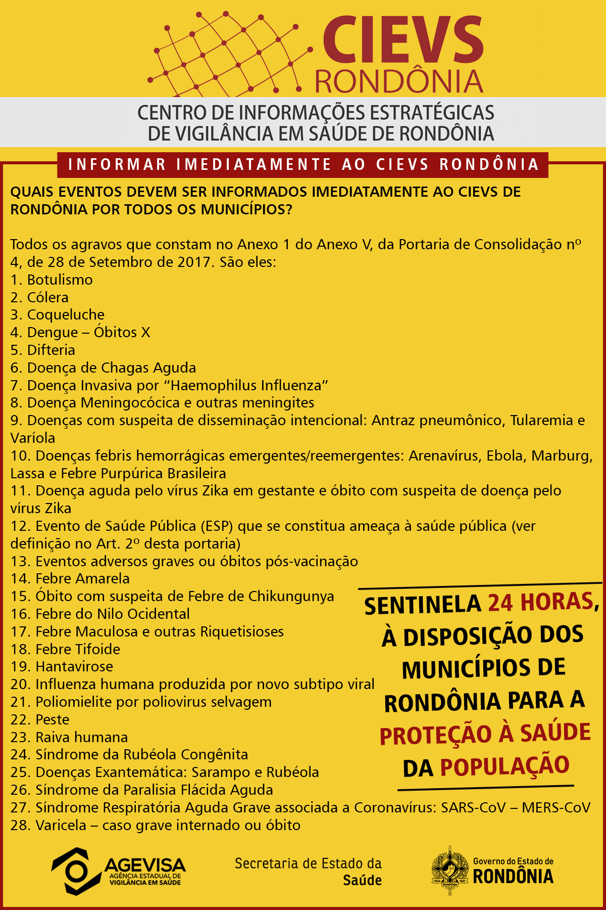
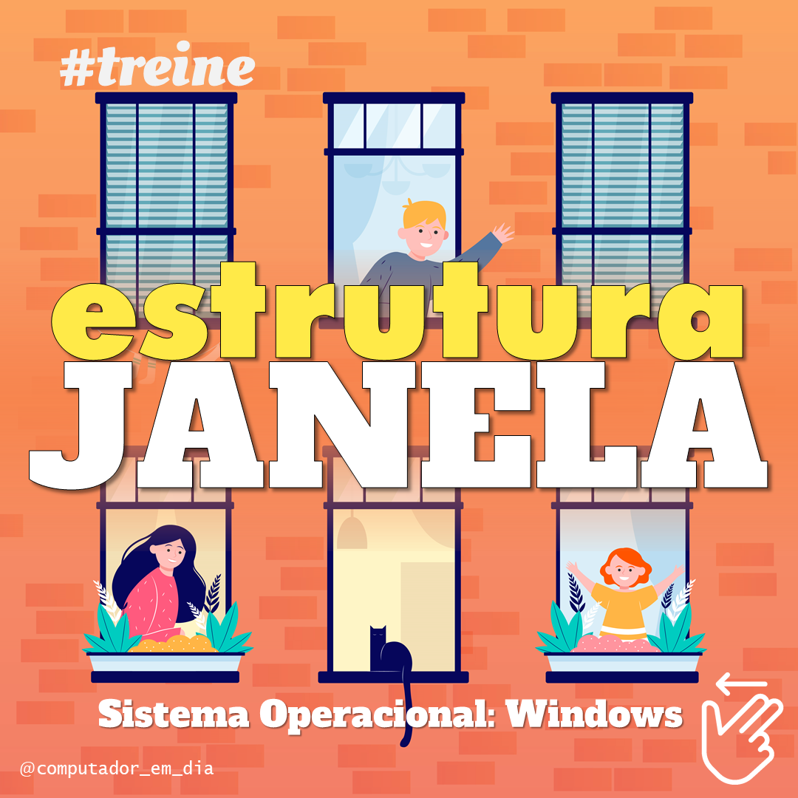

Ensino profissionalizante
Instrutor de Informática
Center Cursos · Formação prática em informática para estudantes de cursos profissionalizantes.
Porto Velho, Rondônia · Brasil
Sou Daniel Attias, licenciado em Computação pela UNIR, professor e desenvolvedor. Minha trajetória conecta sala de aula, programação e soluções digitais.
Sobre mim
Minha formação em Licenciatura em Computação uniu duas áreas que sempre caminharam juntas na minha história: desenvolver soluções e ajudar pessoas a compreender a tecnologia.
Atuei com ensino de informática, montagem e manutenção de computadores, programação básica e monitoria acadêmica. Também acumulei experiências em tecnologia da informação, administração e produção visual.
Caminhada profissional
Da assistência administrativa à docência em computação: cada etapa ampliou minha visão sobre pessoas, processos e tecnologia.
Ensino profissionalizante
Center Cursos · Formação prática em informática para estudantes de cursos profissionalizantes.
Docência
Aprender Mais · Aulas de montagem e manutenção de computadores e programação básica.
Ensino superior
Universidade Federal de Rondônia · Apoio à aprendizagem de programação durante a graduação.
Formação docente
IFRO e Escola Brasília · Prática curricular em diferentes contextos de ensino de computação.
Tecnologia da informação
AGEVISA-RO · Experiência em tecnologia aplicada ao serviço público de saúde.
Início profissional
DETRAN-RO · Estágio de ensino médio e primeiro contato com soluções digitais para rotinas internas.
Projetos selecionados
Uma seleção de projetos autorais e acadêmicos publicados no GitHub.
Educação · Web
Hub que reúne materiais em vídeo, texto, animações e outros formatos para facilitar o acesso a recursos de aprendizagem.
Ver repositório ↗PHP · Aplicação web
Sistema desenvolvido como projeto individual no programa DevStart da be.academy.
Ver repositório ↗PHP · Projeto autoral
Protótipo de uma plataforma de financiamento coletivo, explorando lógica de negócio e desenvolvimento web.
Ver repositório ↗C++ · Lógica
Versão em C++ de um sistema de financiamento coletivo, com foco em fundamentos de programação.
Ver repositório ↗Comunicação visual
Peças produzidas para comunicação institucional e mídias digitais.


Vamos conversar
Estou aberto a conexões, colaborações e oportunidades profissionais.